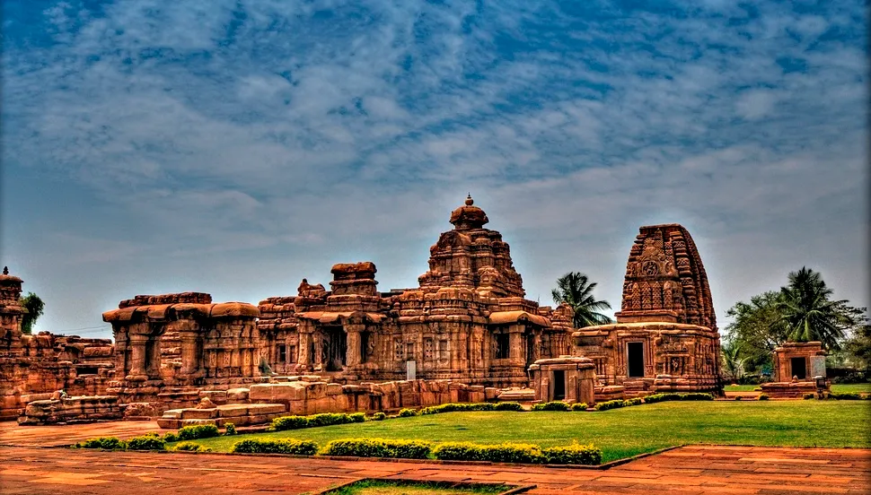
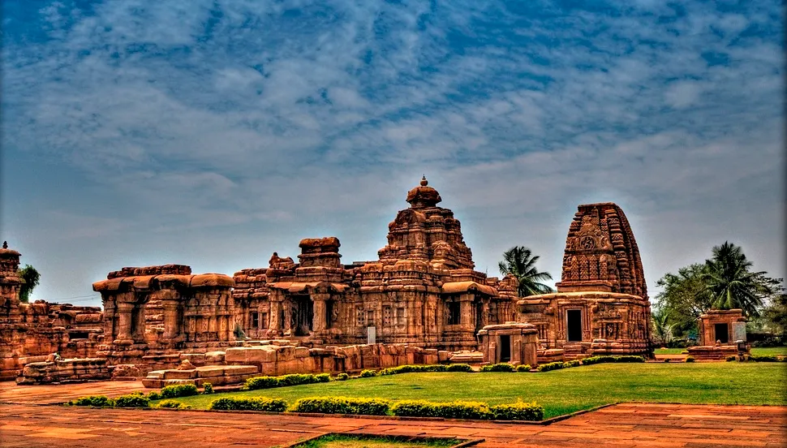

Structure of the Temples
 

The Vesara style of temple architecture, which emerged between the 7th and 12th centuries CE in India, is a unique blend of both Nagara and Dravida styles. Vesara represents a fusion of architectural elements from the northern (Nagara) and southern (Dravida) traditions, resulting in a distinct and harmonious style. Here are the key features and details of the Vesara style:...
Key Features
Architectural Fusion:
*Vesara style represents a synthesis of Nagara and Dravida elements, showcasing a balanced combination of features from both traditions.
Shikhara (Tower):
*The shikhara in Vesara temples is usually pyramidal, similar to the Dravida style, but it may lack the stepped appearance seen in pure Dravida architecture.
Mandapa (Porch):
*Vesara temples often feature a mandapa with pillars, similar to the Nagara style, but the design may incorporate Dravida-style elements as well.
Entrance Gopuram:
*While Vesara temples may have an entrance gopuram (tower), it is generally smaller and less ornate compared to the elaborate gopurams seen in Dravida temples.
Axial Alignment:
*Like the Dravida style, Vesara temples typically follow axial alignment, ensuring a clear line of sight from the entrance to the sanctum.
Sculptural Ornamentation:
* Vesara temples often showcase intricate sculptures and carvings, drawing inspiration from both northern and southern traditions.
*The sculptures may depict deities, celestial beings, and mythological narratives.
Pillared Halls:
*The mandapas in Vesara temples frequently include pillared halls, reminiscent of the Nagara style, providing space for congregational activities and rituals.
Fivefold Floor Plan:
*Similar to both Nagara and Dravida styles, Vesara temples may adopt a fivefold floor plan, with the main shrine surrounded by four subsidiary shrines or corners.
Examples of Vesara Temples:
*Mallikarjuna Temple, Pattadakal: Located in Karnataka, this UNESCO World Heritage Site is a prime example of Vesara architecture, showcasing a harmonious blend of northern and southern features.
*Kashivishvanatha Temple, Pattadakal: Another temple in the Pattadakal complex exhibiting Vesara characteristics.
Regional Variations:
*Vesara architecture varies across regions, and regional influences may impact the specific elements incorporated into the temple design.
The Vesara style reflects a period of cultural and artistic exchange between the northern and southern regions of India. It symbolizes a synthesis of diverse traditions, resulting in a distinctive architectural style that is both aesthetically pleasing and culturally significant. Vesara temples contribute to the rich tapestry of Indian temple architecture, showcasing the adaptability and creativity of ancient builders and artisans...